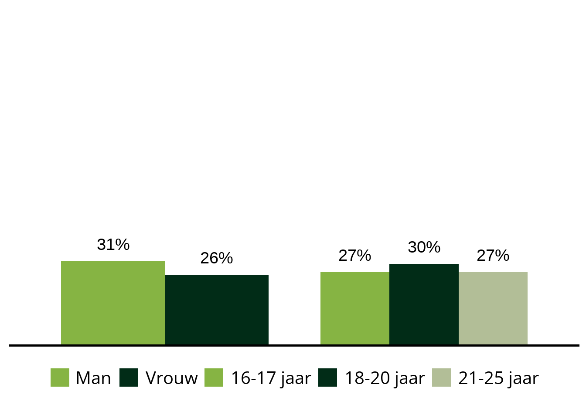
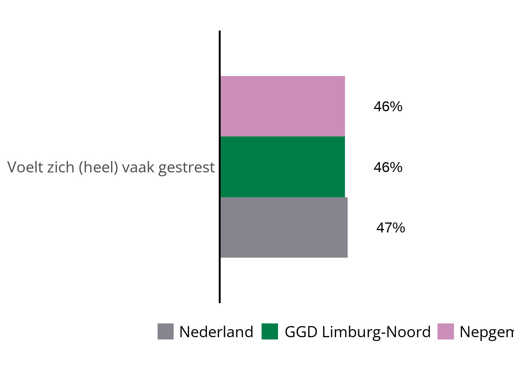
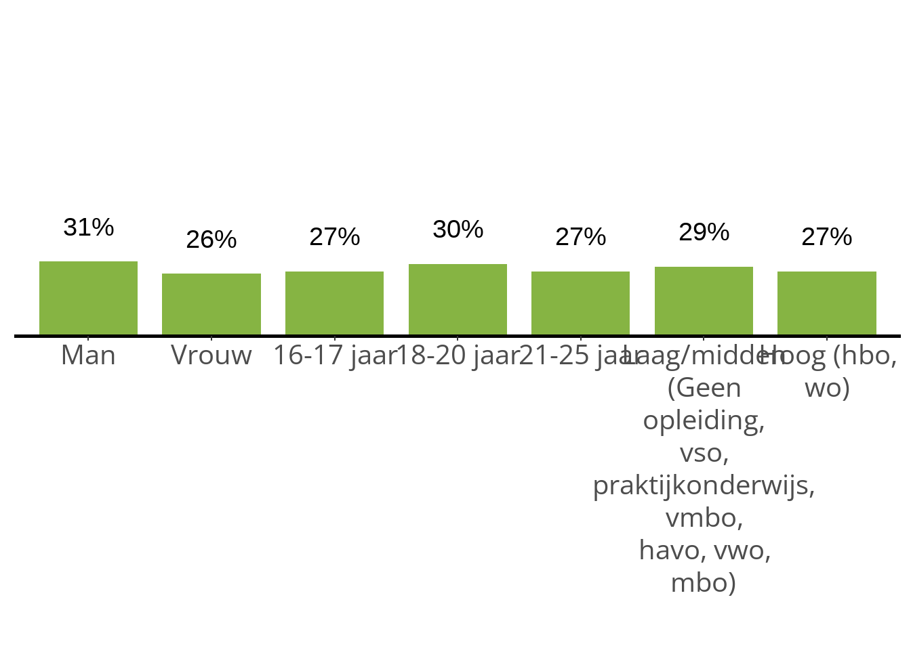
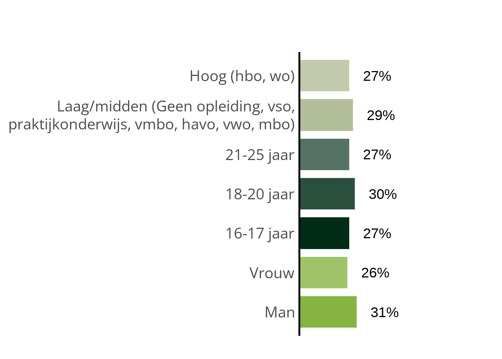
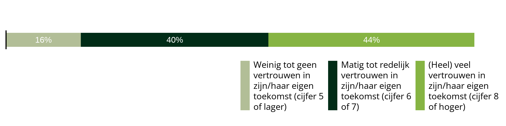
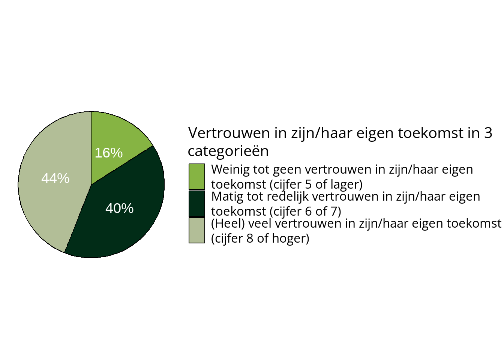
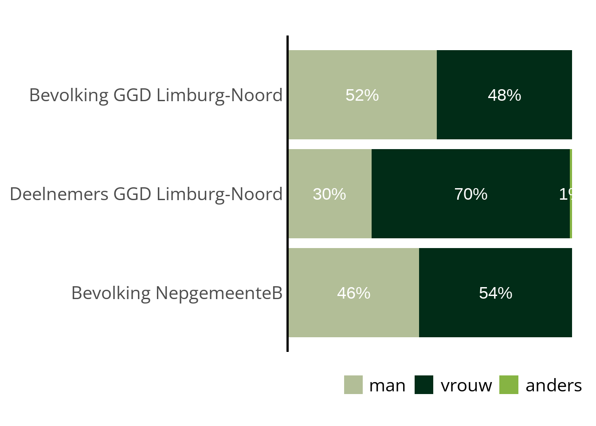

{r, fig.alt = ggplot2::get_alt_text(plot)}
plot = maak_staafdiagram(...)
plot6 Grafiekfuncties
Hieronder volgt uitleg voor de grafiekfuncties. De functies genereren automatisch alt-text, maar deze kan ook handmatig ingevoerd worden.
6.1 Alt-text in code-blokken
Opgelet
Als je in Quarto zelf nieuwe blokjes code maakt met grafieken is het belangrijk dat alt-text goed wordt meegenomen bij het renderen van het document. Alt-text is tekst die bij een afbeelding hoort en door screenreader voorgelezen wordt. Om de alt-text van een ggplot2 grafiek goed mee te geven aan een codeblok in quarto is het volgende nodig:
De grafiek moet opgeslagen worden in een object (hieronder ‘plot’)
De alt-text moet opgehaald worden uit het object d.m.v. get_alt_text() en ingevuld worden het argument fig.alt in de ‘chunk-options’ van het codeblock.
Dit is bij de standaardrapportage uiteraard al geregeld en ziet er dan zo uit:
6.2 Staafdiagram: Dubbele uitsplitsing
De functie maak_staafdiagram_dubbele_uitsplitsing() maakt een staafdiagram voor een dichotome variabele waarbij de percentages ‘ja’ (1) worden weergeven. Er kunnen twee kruisvariabelen ingevoerd worden. De eerste kruisvariabele splitst de data op de X-as en de tweede kruisvariabele op kleur.
6.2.1 Nodige argumenten:
var_inhoud: Een character met de naam van een dichotome variabele
var_crossing_groep: Een character met de naam van een kruisvariabele. Mag leeg zijn als er meerdere niveaus zijn en de andere var_crossing gevuld is.
var_crossing_kleur: Een character met de naam van een kruisvariabele. Mag leeg zijn als er meerdere niveaus zijn en de andere var_crossing gevuld is.
6.2.2 Optionele argumenten:
titel: Een character met een titel voor het plot
kleuren: Een character vector met alternatieve kleuren voor de grafiek
nvar: Een numeric met het minimum aantal observaties per vraag. Als deze waarde leeg is, wordt de standaardwaarde voor nvar aangehouden.
ncel: Een numeric met het minimum aantal observaties per antwoord. Als deze waarde leeg is, wordt de standaardwaarde voor ncel aangehouden.
alt_text: Een character met de ‘alt-text’ voor de grafiek. Als deze waarde leeg is, wordt er automatisch gegenereerde alt-text meegegeven die alle waarden in de grafiek bevat. Let op; De verteerbaarheid van automatisch gegenereerde tekst neemt af wanneer de grafieken erg complex zijn, of variabellabels erg lang zijn.
caption: Een character met een caption voor de grafiek. Wordt standaard linksonder de grafiek geplaatst.
niveaus: Een character vector met de niveaus c(“nl”,“regio”,“gemeente”). Standaard op GGD-regio “regio” ingesteld. Kan meerdere niveaus hebben voor niveauvergelijking. Dit kan alleen als var_crossing_kleur OF var_crossing_groep leeg is. De regio-vergelijking neemt de lege plek dan over.
tabel_en_grafiek: TRUE of FALSE. Standaard FALSE. Als TRUE wordt er naast de grafiek ook code voor een tabel gegenereerd die d.m.v. een tabblad in te zien valt. LET OP: Hiervoor moeten codeblokken anders aangeroepen worden. Zie Tabel en grafiek
toon_y: TRUE of FALSE. Standaard FALSE. Als TRUE wordt een Y-as met percentages getoond.
x_as_label_wrap: Numerieke waarde. Er worden automatisch regeleinden ingevoegd in langere labels. Deze waarde bepaald na hoeveel tekens er een regeleinde ingevoegd moet worden. Het eerstvolgende ‘woord’ verschijnt dan op de volgende regel.
x_as_regels_toevoegen: Numerieke waarde. Standaard op nul. Kan gebruikt worden om de x-as van twee grafieken naast elkaar uit te lijnen. Zie X-assen. uitlijnen
6.2.3 Standaard staafdiagram met dubbele uitsplitsing
#Standaard staafdiagram met dubbele uitsplitsing
plot = monitor_df %>%
maak_staafdiagram_dubbele_uitsplitsing(
var_inhoud = "LVEES404",
var_crossing_groep = "AGGSA402",
var_crossing_kleur = "AGLFA401"
)
plot6.2.4 Aangepast staafdiagram met dubbele uitsplitsing
#Staafdiagram met dubbele uitsplitsing,
#aangepaste titel, kleuren, alt-text, nvar en ncel
plot = monitor_df %>%
maak_staafdiagram_dubbele_uitsplitsing(
var_inhoud = "LVEES404",
var_crossing_groep = "AGGSA402",
var_crossing_kleur = "AGLFA401",
titel = "Titel staafdiagram",
kleuren = c("#FEC805","#1A2C54","#009BD9"),
alt_text = "Tekst die de grafiek toelicht t.b.v. digitoegankelijkheid",
nvar = 100,
ncel = 75
)
plot
6.3 Staafdiagram vergelijking
De functie maak_staafdiagram_vergelijking() maakt een staafdiagram voor een dichotome variabele waarbij er meerdere kruisvariabelen ingevoerd kunnen worden. De percentages ‘ja’ (1) worden voor iedere individuele kruisvariabele naast elkaar weergeven.
6.3.1 Nodige argumenten:
var_inhoud: Een character met de naam van een dichotome variabele
var_crossings: Een character vector met de naam van één of meer kruisvariabelen
6.3.2 Optionele argumenten:
- niveaus: Een character met één niveau uit “nl”,“regio” of “gemeente”. Standaard op GGD-regio “regio” ingesteld. Filtert data op ingegeven niveau.
Verder dezelfde optionele argumenten als in maak_staafdiagram_dubbele_uitsplitsing():
6.3.3 Standaard staafdiagram met vergelijking
#Standaard staafdiagram met vergelijking
plot = monitor_df %>%
maak_staafdiagram_vergelijking(
var_inhoud = "LVEES404",
var_crossings = c("AGGSA402","AGLFA401")
)
plot
6.4 Staafdiagram met meerdere staven
De functie maak_staafdiagram_meerdere_staven() maakt een staafdiagram voor ieder soort variabele waarbij de percentages per antwoord worden weergeven. Optioneel kan een kruisvariabele ingevoerd worden, de grafiek zal de percentages dan opsplitsen op kleur. De grafiek kan ook horizontaal weergeven worden.
Alternatief kan de functie gebruikt worden om meerdere indicatoren naast elkaar te tonen of om slechts de percentages van 1 antwoord te tonen (ipv alle antwoorden).
6.4.1 Nodige argumenten:
- var_inhoud: Een character met de naam van een dichotome variabele
6.4.2 Optionele argumenten:
Naast dezelfde optionele argumenten als in maak_staafdiagram_dubbele_uitsplitsing()::
var_crossing: Een character met de naam van één kruisvariabele
niveaus: Een character vector met de niveaus c(“nl”,“regio”,“gemeente”). Standaard op GGD-regio “regio” ingesteld. Kan meerdere niveaus hebben voor niveauvergelijking. Dit kan alleen als var_crossing leeg is.
var_inhoud_waarde: Een numeric waar de numerieke waarde voor een antwoord ingevuld kan worden. Als deze waarde leeg is worden alle antwoorden getoond. Anders alleen het antwoorden dat is. Let op: als je een waarde invult die niet bestaat gebeurd er niks.
flip: TRUE of FALSE. Standaard FALSE. Als TRUE wordt de grafiek horizontaal weergeven
toon_aslabel: TRUE of FALSE. Standaard TRUE. Als FALSE worden er geen aslabels op de x-as getoond.
6.4.3 Standaard staafdiagram met meerdere staven
#Standaard staafdiagram met meerdere staven
plot = monitor_df %>%
maak_staafdiagram_meerdere_staven(
var_inhoud = "LVVTA404",
niveaus = c("nl","gemeente")
)
plot![staafdiagram met percentages voor de indicator 'Vertrouwen in zijn/haar eigen toekomst in 3 categorieën' bij jongvolwassenen in Nederland en NepgemeenteB: Nederland Weinig tot geenvertrouwen inzijn/haar eigentoekomst (cijfer 5of lager): 15%, Nederland Matig tot redelijkvertrouwen inzijn/haar eigentoekomst (cijfer 6of 7): 40%, Nederland (Heel) veelvertrouwen inzijn/haar eigentoekomst (cijfer 8of hoger): 44%, NepgemeenteB Weinig tot geenvertrouwen inzijn/haar eigentoekomst (cijfer 5of lager): 16%, NepgemeenteB Matig tot redelijkvertrouwen inzijn/haar eigentoekomst (cijfer 6of 7): 40%, NepgemeenteB (Heel) veelvertrouwen inzijn/haar eigentoekomst (cijfer 8of hoger): 45%.](voorbeeld_grafieken_files/figure-html/unnamed-chunk-6-1.png)
6.4.4 Aangepast staafdiagram met meerdere staven
#Staafdiagram met meerdere staven, kruisvariabele en flip = TRUE
plot = monitor_df %>%
maak_staafdiagram_meerdere_staven(
var_inhoud = "LVVTA404",
var_crossing = "AGGSA402",
flip = TRUE
)
plot![staafdiagram met percentages voor de indicator 'Vertrouwen in zijn/haar eigen toekomst in 3 categorieën' bij jongvolwassenen per Gender in twee categorieën in GGD Limburg-Noord: Man Weinig tot geen vertrouwen in zijn/haareigen toekomst (cijfer 5 of lager): 16%, Man Matig tot redelijk vertrouwen inzijn/haar eigen toekomst (cijfer 6 of 7): 39%, Man (Heel) veel vertrouwen in zijn/haareigen toekomst (cijfer 8 of hoger): 45%, Vrouw Weinig tot geen vertrouwen in zijn/haareigen toekomst (cijfer 5 of lager): 16%, Vrouw Matig tot redelijk vertrouwen inzijn/haar eigen toekomst (cijfer 6 of 7): 40%, Vrouw (Heel) veel vertrouwen in zijn/haareigen toekomst (cijfer 8 of hoger): 44%.](voorbeeld_grafieken_files/figure-html/unnamed-chunk-7-1.png)
6.4.5 Aangepast staafdiagram met meerdere staven: Verschillende indicatoren
Om de percentages van meerdere indicatoren te tonen kan bij var_inhoud een vector ingevoerd worden met die indicatoren. Per indiactor wordt dan het percentage gegeven voor het antwoord met de waarde 1.
Deze mogelijkheid is daarom alleen geschikt voor dichotome vragen waarbij het bevestigende antwoord de waarde 1 heeft.
#Staafdiagram met meerdere staven, kruisvariabele en flip = TRUE
plot = monitor_df %>%
maak_staafdiagram_meerdere_staven(
var_inhoud = c("LVVTA405","LVVTA406","LVVTA407"),
var_crossing = "AGGSA402",
flip = TRUE
)
plot
6.4.6 Aangepast staafdiagram met meerdere staven: Filteren op 1 antwoord
Het is ook mogelijk om antwoorden weg te filteren uit maak_staafdiagram_meerdere_staven(). Dit kan met de parameter var_inhoud_waarde.
Wanneer var_inhoud waarde is ingevuld worden het label van de staven aangepast naar het variabel-label i.p.v. het val_label.
Deze optie is geschikt voor dichitome / binaire variabelen.
#Staafdiagram met meerdere staven, kruisvariabele en flip = TRUE
plot = monitor_df %>%
maak_staafdiagram_meerdere_staven(
var_inhoud = "LVSTA415",
niveaus = c("nl","regio", "gemeente"),
var_inhoud_waarde = 1,
flip = TRUE
)
plot
6.5 Staafdiagram uitsplitsing naast elkaar
De functie maak_staafdiagram_uitsplitsing_naast_elkaar() maakt een staafdiagram voor dichotome variabelen waarbij de percentages ‘ja’ (1) voor meerdere kruisvariabelen per uitsplitsing worden weergeven. Optioneel worden de onderscheiden op kleur. De grafiek kan ook horizontaal weergeven worden.
6.5.1 Nodige argumenten:
- var_inhoud: Een character met de naam van een dichotome variabele
- var_crossings: Een character vector met de naam van één of meer kruisvariabelen
6.5.2 Optionele argumenten:
Naast dezelfde optionele argumenten als in maak_staafdiagram_dubbele_uitsplitsing()::
kleuren_per_crossing: TRUE of FALSE. Als TRUE krijgt iedere kruisvariabele een eigen kleur.
fade_kleuren: TRUE of FALSE. Als TRUE is er overloop in de kleuren per uitsplitsing
flip: TRUE of FALSE. Als TRUE wordt de grafiek horizontaal weergeven
niveaus: Een character met één niveau uit “nl”,“regio” of “gemeente”. Standaard op GGD-regio “regio” ingesteld. Filtert data op ingegeven niveau.
6.5.3 Standaard staafdiagram met uitsplitsingen naast elkaar
#Standaard staafdiagram met uitsplitsingen naast elkaar
plot = monitor_df %>%
maak_staafdiagram_uitsplitsing_naast_elkaar(
var_inhoud = "LVEES404",
var_crossings = c("AGGSA402","AGLFA401","AGOWS404")
)
plot
6.5.4 Aangepast staafdiagram met uitsplitsingen naast elkaar
#Staafdiagram met uitsplitsingen naast elkaar, met overlopende kleuren & horizontaal
plot = monitor_df %>%
maak_staafdiagram_uitsplitsing_naast_elkaar(
var_inhoud = "LVEES404",
var_crossings = c("AGGSA402","AGLFA401","AGOWS404"),
kleuren_per_crossing = TRUE,
fade_kleuren = TRUE,
flip = TRUE
)
plot
6.6 Staafdiagram gestapeld
De functie maak_staafdiagram_gestapeld() maakt een horizontaal gestapeld staafdiagram voor ieder soort variabele.
Tip
figuren die met R worden gemaakt schalen automatisch naar de ruimte die ze hebben. Dit betekend dat het gestapeld staafdiagram standaard ‘hoger’ is dan gewenst.
De dimensies van een figuur in Quarto kunnen aangepast worden in de chunk-options met de argumenten ‘fig.width’ en ‘fig.height’ zoals hier:
{r, fig.alt = ggplot2::get_alt_text(plot), fig.width = 12, fig.height = 3}
plot = maak_staafdiagram(…)
plot
6.6.1 Nodige argumenten
- var_inhoud: Een character met de naam van een variabele
6.6.2 Optionele argumenten
Naast dezelfde optionele argumenten als in maak_staafdiagram_dubbele_uitsplitsing():
- var_crossing: Een character met de naam van één kruisvariabele
6.6.3 Standaard gestapeld staafdiagram
#Standaard gestapeld staafdiagram
plot = monitor_df %>%
maak_staafdiagram_gestapeld(
var_inhoud = "LVVTA404"
)
plot
6.6.4 Aangepast gestapeld staafdiagram
#Standaard gestapeld staafdiagram
plot = monitor_df %>%
maak_staafdiagram_gestapeld(
var_inhoud = "LVVTA404",
var_crossing = "AGGSA402"
)
plot![gestapeld staafdiagram met percentages voor de indicator 'Vertrouwen in zijn/haar eigen toekomst in 3 categorieën' bij jongvolwassenen per Gender in twee categorieën in GGD Limburg-Noord: Man Weinig tot geenvertrouwen inzijn/haar eigentoekomst (cijfer 5of lager): 16%, Man Matig tot redelijkvertrouwen inzijn/haar eigentoekomst (cijfer 6of 7): 39%, Man (Heel) veelvertrouwen inzijn/haar eigentoekomst (cijfer 8of hoger): 45%, Vrouw Weinig tot geenvertrouwen inzijn/haar eigentoekomst (cijfer 5of lager): 16%, Vrouw Matig tot redelijkvertrouwen inzijn/haar eigentoekomst (cijfer 6of 7): 40%, Vrouw (Heel) veelvertrouwen inzijn/haar eigentoekomst (cijfer 8of hoger): 44%.](voorbeeld_grafieken_files/figure-html/unnamed-chunk-14-1.png)
6.7 Cirkeldiagram
6.7.1 Nodige argumenten
- var_inhoud: Een character met de naam van een variabele
6.7.2 Optionele argumenten
Dezelfde argumenten als in maak_staafdiagram_dubbele_uitsplitsing():
- titel: character variabele. Als argument leeg is wordt het variabellabel van var_inhoud gebruikt.
#Standaard cirkeldiagram staafdiagram
plot = monitor_df %>%
maak_cirkeldiagram(
var_inhoud = "LVVTA404"
)
plot
6.8 Populatiegrafiek CBS
Functie om een horizontaal georienteerd gestapeld staafdiagram te maken waarin populatiegegevens van het CBS worden vergeleken met de response op de per regio en gemeente. Dit kan o.b.v. de kruisvariabelen ‘leeftijd’ en ‘geslacht’ gedaan worden.
6.8.1 Optionele argumenten
- gem_code: character variabele met gemeentenaam. Standaard de ‘huidige’ gemeente o.b.v. params$gemeentecode.
- crossing_cbs: character variabele. De naam van de kruising die getoond moet worden. Opties: “leeftijd” of “geslacht”.
- niveaus: character vector met niveaus die getoond moeten worden. Standaard c(“nl”,“regio”,“gemeente”)
- missing_bewaren: TRUE of FALSE. Als TRUE worden percentages met missing categorieën voor Deelnemers bewaard en getoond in de grafiek.
- missing_label: character variabele. Het label dat gegeven moet worden aan een eventuele missing categorie. Standaard “Onbekend”.
- kleuren: Een character vector met alternatieve kleuren voor de grafiek
6.8.2 Standaard Populatiegrafiek CBS
plot <- monitor_df %>%
maak_grafiek_cbs_bevolking()
plot
6.8.3 Aangepaste Populatiegrafiek CBS
plot <- monitor_df %>%
maak_grafiek_cbs_bevolking(
niveaus = c("regio","gemeente"),
crossing_cbs = "geslacht",
missing_bewaren = TRUE,
missing_label = "niet ingevuld",
)
plot
6.9 Lettertype en tekstopmaak in grafieken
Alle grafieken worden met de library ggplot2 gemaakt. In het script hulpfuncties worden lettertype en tekstopmaak in de grafieken bepaald dmv. de ggplot2 functie theme(). Bovenaan het script hulpfuncties.R zijn een paar aantal variabelen definieerd m.b.t. tekstopmaak zodat deze gemakkelijk aangepast kunnen worden.
# fonts grafieken --------------------------------------------------------
#voor gemak; 1 plek waar we alle tekstopmaak voor ggplot kunnen aanpassen
#alle ggplot grafieken hebben overal dezelfde font-family.
font_family = "Open Sans"
#Titels
titel_size <- 40
#Algemeen
font_size <- 30
#line_height; ruimte tussen regels
line_height <- .5
#Labels op de X-as (waar die relevant zijn)
as_label_size <- 30
#legend titles
#voor alle grafieken behalve cirkel is font_size aangehouden
legend_title_size_cirkel <- 30
#legend keys
legend_text_size <- 30
legend_text_size_cirkel <- 25
#caption
caption_size <- 20
#percentages die boven/naast of in balken staan
#LET OP percentages boven balken zijn een geom_text() element en worden dus niet door theme() bepaald. Size is hierbij op een een andere schaal.
geom_text_percentage <- 10Er kan een verschil zijn tussen de relatieve tekstgrootte in een grafiek wanneer je deze bekijkt in Rstudio/Quarto en wanneer je deze bekijkt in de uitgedraaide rapportage. Dit komt omdat de grootte van een lettertype niet relatief wordt bepaald, maar wordt bepaald met een aantal pixels. In een grafiek met een hogere resolutie lijkt het dus dat tekst kleiner is. In werkelijkheid is de grafiek groter geworden en hebben letters nog steeds hetzelfde aantal pixels. Dit is wat er gebeurd wanneer een preview grotere letters heeft dan de grafiek in de uitgedraaide rapportage.
Dit kan vervelend zijn bij het ontwerpen en aanpassen van een rapportage. Om te zorgen dat de ‘preview’ lijkt op het eindresultaat kan je rechtsboven in het preview raampje op het icoon met “Show in new Window” klikken. De grafiek verschijnt dan in een eigen venster. Vervolgens kan je dit venster naar de juiste grote instellen.